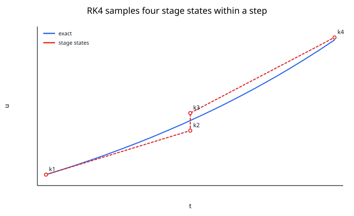
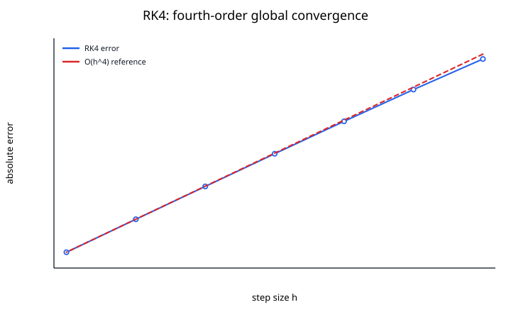

Runge--Kutta methods advance an ODE solution using several carefully chosen slope evaluations inside each step. They achieve higher-order accuracy without requiring explicit derivatives of $f$ beyond the first derivative already present in the ODE.
Consider
$$ u'(t) = f(t,u), \qquad u(t_0) = u_0. $$
The best-known member of the family is the classical fourth-order Runge--Kutta method, usually called RK4.
Given $(t_n,u_n)$ and step size $h$,
$$ k_1 = f(t_n,u_n), $$
$$ k_2 = f\left(t_n + \frac{h}{2}, u_n + \frac{h}{2}k_1 \right), $$
$$ k_3 = f\left(t_n + \frac{h}{2}, u_n + \frac{h}{2}k_2 \right), $$
$$ k_4 = f(t_n + h,u_n + h k_3). $$
Then
$$ u_{n+1} = u_n + \frac{h}{6} \left(k_1 + 2k_2 + 2k_3 + k_4 \right). $$
The four stages sample the vector field at the beginning, twice near the middle, and at the end of the step.

The exact solution has a Taylor expansion containing derivatives such as $u''$, $u'''$, and $u^{(4)}$. Those derivatives can be expressed using derivatives of $f$, but computing them explicitly is inconvenient.
Runge--Kutta methods instead choose stage locations and weights so that the expansion of the numerical update matches the Taylor expansion through a desired order.
For RK4:
Therefore, halving $h$ reduces the global error by roughly a factor of $16$ in the asymptotic regime.

For
$$ u' = u, \qquad u(0) = 1, $$
with $h=0.1$:
$$ k_1 = 1, $$
$$ k_2 = 1 + 0.05k_1 = 1.05, $$
$$ k_3 = 1 + 0.05k_2 = 1.0525, $$
$$ k_4 = 1 + 0.1k_3 = 1.10525. $$
Thus
$$ u_1 = 1 + \frac{0.1}{6} \left(1 + 2(1.05) + 2(1.0525) + 1.10525 \right), $$
which gives
$$ u_1\approx1.105170833. $$
The exact solution is
$$ e^{0.1}\approx1.105170186. $$
The error after a single step is already below $10^{-6}$.
A Runge--Kutta method can be summarized by a Butcher tableau. For RK4:
$$ \begin{array}{c|cccc} 0 \\ \frac12 & \frac12 \\ \frac12 & 0 & \frac12 \\ 1 & 0 & 0 & 1 \\ \hline & \frac16 & \frac13 & \frac13 & \frac16 \end{array} $$
The entries specify:
For an $s$-stage explicit method,
$$ k_i = f\left(t_n + c_i h, u_n + h\sum_{j=1}^{i-1}a_{ij}k_j \right), $$
and
$$ u_{n+1} = u_n + h\sum_{i=1}^{s}b_i k_i. $$
Different choices of the coefficients produce different methods and orders.
Fixed-step RK4 is simple, but modern solvers often use embedded pairs, such as RK45.
An embedded pair computes two approximations of different orders using mostly the same stage evaluations. Their difference estimates the local error.
A controller then changes $h$:
This can reduce work dramatically when a problem alternates between easy and difficult regions.
For
$$ u' = \lambda u, $$
RK4 has stability polynomial
$$ R(z) = 1 + z + \frac{z^2}{2} + \frac{z^3}{6} + \frac{z^4}{24}, \qquad z = h\lambda. $$
The method is stable where
$$ |R(z)|\le1. $$
RK4 has a useful explicit stability region but is not A-stable. Strongly stiff systems may still demand impractically small steps.
| Method | Evaluations of $f$ per step | Global order |
|---|---|---|
| Euler | 1 | 1 |
| Heun | 2 | 2 |
| RK4 | 4 | 4 |
Higher order does not automatically mean lower total cost. The best method depends on:
RK4 applies directly to
$$ \mathbf{u}' = \mathbf{f}(t,\mathbf{u}). $$
Each $k_i$ becomes a vector. This makes RK methods convenient for mechanics, circuits, chemical kinetics, population models, and other coupled systems.